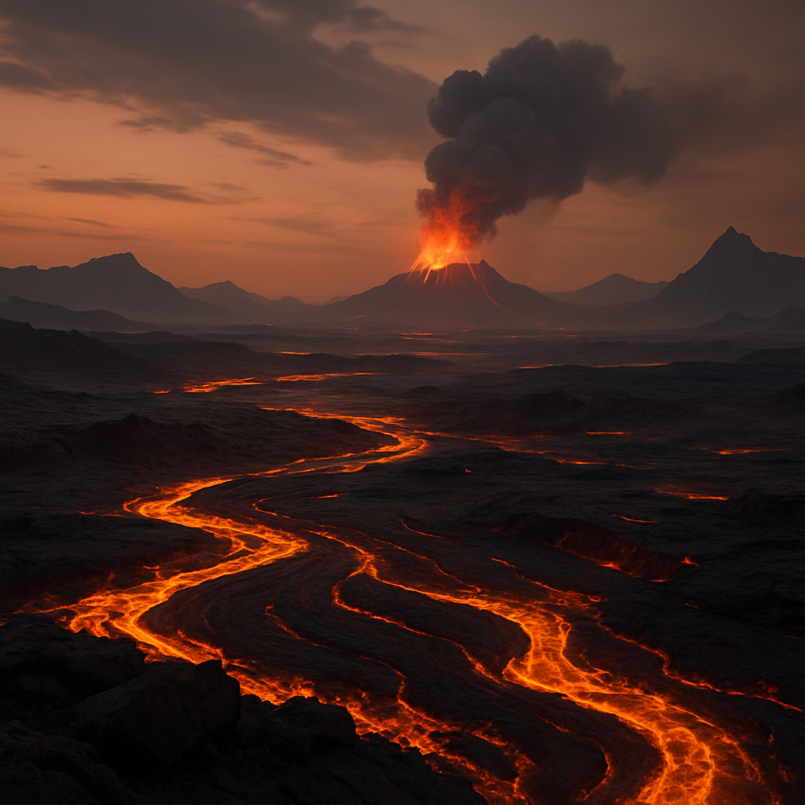

Turkish Republic’s Volcanic Dream Mining Hel’s Lava for Power or Just Hot Air
In what many are already calling the boldest energy proposal of the century — or the most delusional — the Turkish Republic has unveiled plans to harness Hel’s churning lava flows as a revolutionary power source.
Standing on the obsidian shores of Lake Fumarole, Turkish officials spoke of a “new era of limitless energy” extracted from the planet’s fiery veins. “Hel’s lava is the key to a perpetual power cycle,” announced Dr. Sabiha Yıldırım, Minister of Unconventional Energy. “We will channel this molten gift to fuel our colonies for generations.”
As a humble Combustion Preacher from the Caliphate — where we worship the sun but know better than to dance in volcanoes — I find myself struggling to suppress both laughter and tears. Have our cousins in Ankara misplaced their thermometers? Lava, by its very nature, tends to erupt, flow, and incinerate — not gently boil water to spin turbines.
The Republic’s blueprint suggests an ambitious network of sub-crustal heat exchangers to capture thermal energy before it escapes to Hel’s noxious skies. Yet geologists whisper of Hel’s unpredictable lava tides — capable of surging without warning — and the corrosive plumes that have already devoured countless prospecting drones.
Investors remain split. Shares of Istanbul Energy rose 2% on the announcement, driven by speculators dreaming of Hel’s geothermal bounty. But many financial analysts warn of “Molten Bubble Mania” — a hype-fueled spiral eerily reminiscent of the early 22nd-century asteroid helium rush.
Meanwhile, citizens in Hel’s domed settlements express concern. “We worry they’ll poke a hole in the crust and flood our homes with magma,” said Qasim Benali, a local engineer. “It’s one thing to live next to a volcano. It’s another when your government wants to plug a straw into it.”
Time will tell if Rome's volcanic ambitions are a stroke of geothermal genius — or if, like I suspect, they’ll become a cautionary tale of a civilization so desperate for energy it tried to bottle a planet’s wrath.
Until then, I pray for those brave souls who must stand near Hel’s infernal rivers and listen to ministers promising paradise at 1200 degrees Kalvan.